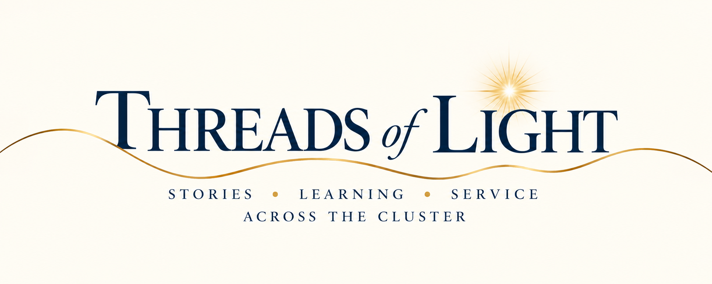
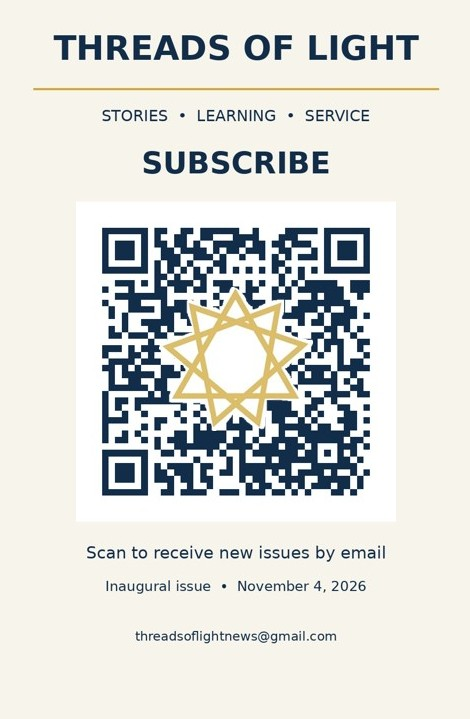

A Little Light Travels Far
Discover the stories, experiences, reflections, and acts of service connecting our communities. Published once each Bahá’í month, Threads of Light celebrates meaningful efforts, shared learning, and the connections that bring us closer together.
Inaugural issue planned for November 4, 2026, the Feast of Qudrat.
Receive Threads of Light
Sign up to receive each issue by email. Subscription is free and voluntary, and you may unsubscribe at any time using the link in our emails.

Scan the code or use the subscription link above.
Share Your Story
We welcome community stories, reflections, experiences, initiatives, and acts of service. You do not need to write a polished article. Tell us what happened, who was involved, when and where, and why the experience mattered. We may follow up to clarify details or request permission for photos or quotations.
Send a contribution
Email your story to threadsoflightnews@gmail.com.
You may also submit your story using our online submission form.
The form opens in a new tab. You do not need to write a polished article, and you may request that your name be withheld from publication. Submissions are reviewed privately by the editorial team.
Current and Past Issues
Planned release: November 4, 2026. Once published, issues will be accessible here.
About This Initiative
Threads of Light is independently edited and inspired by the spirit of learning, service, and friendship. This page is hosted by The Maryam Mottaghi Foundation during the publication’s initial pilot period. The publication is not an official communication of the Bahá’í institutions.
Subscriber information is managed through our email delivery service. Story submissions are reviewed by the editorial team, and submission does not guarantee publication. Please do not submit private information about others without their permission.